To track the vaccination efforts, I scrapped vaccination data from the web using publicaly available data sources to then
Data from: Our World in Data, https://ourworldindata.org/.
Location and Date (YYYY-MM-DD) data was last updated:
# A tibble: 10 x 2
# Groups: location [10]
location date
<chr> <chr>
1 Canada 2020-12-21
2 China 2020-12-19
3 England 2020-12-16
4 Northern Ireland 2020-12-16
5 Russia 2020-12-14
6 Scotland 2020-12-16
7 United Kingdom 2020-12-19
8 United States 2020-12-20
9 Wales 2020-12-16
10 World 2020-12-21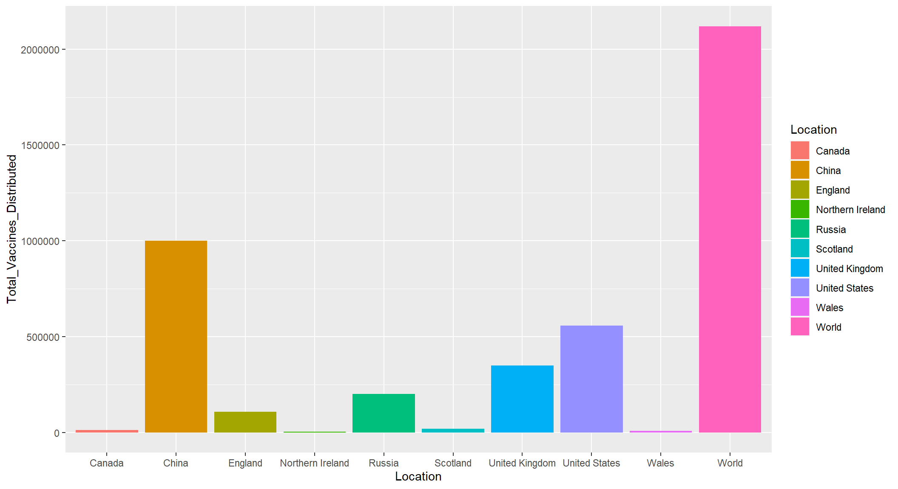
However this Graph is slightly misleading because it does not put into account total populations of the Locations being observed, when it comes the total vaccinations per 100 people the graph looks like this.
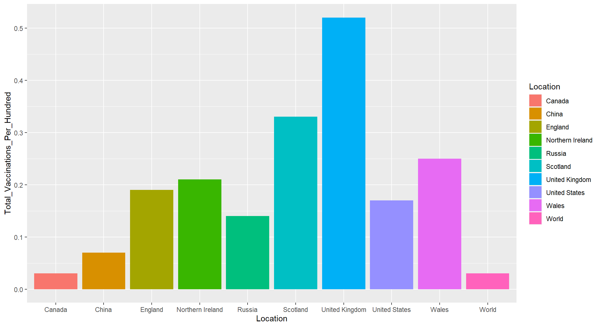
Data from CDC: Center of Disease Control and Prevention, https://data.cdc.gov/Vaccinations/COVID-19-Vaccine-Initial-Allocations-Pfizer/saz5-9hgg/data.
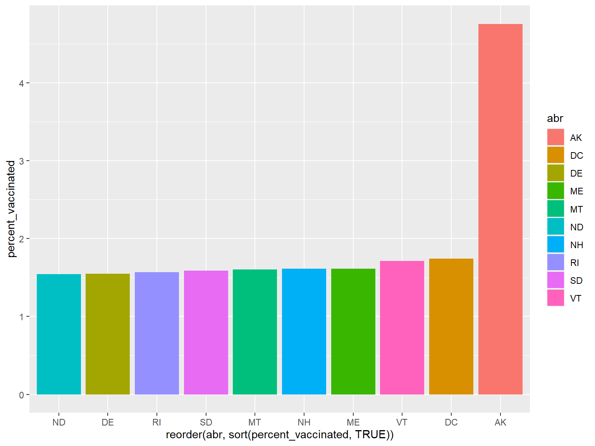
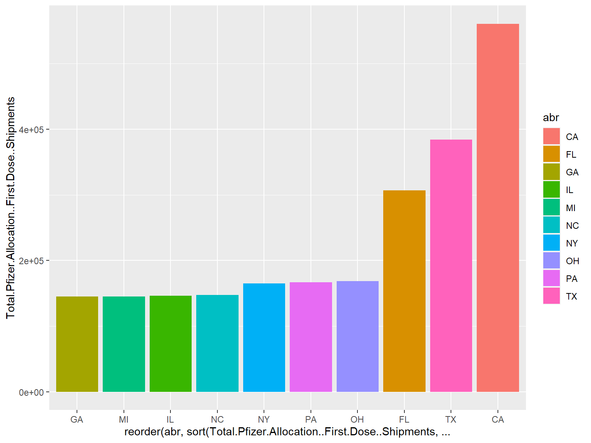
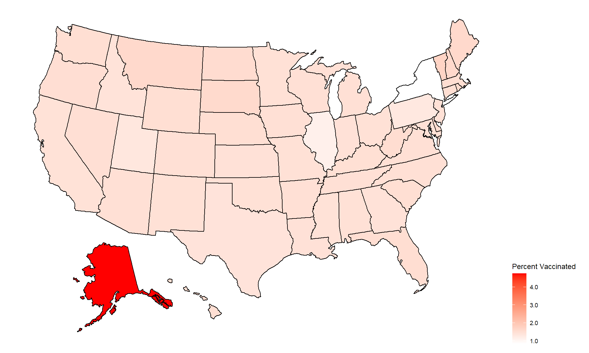
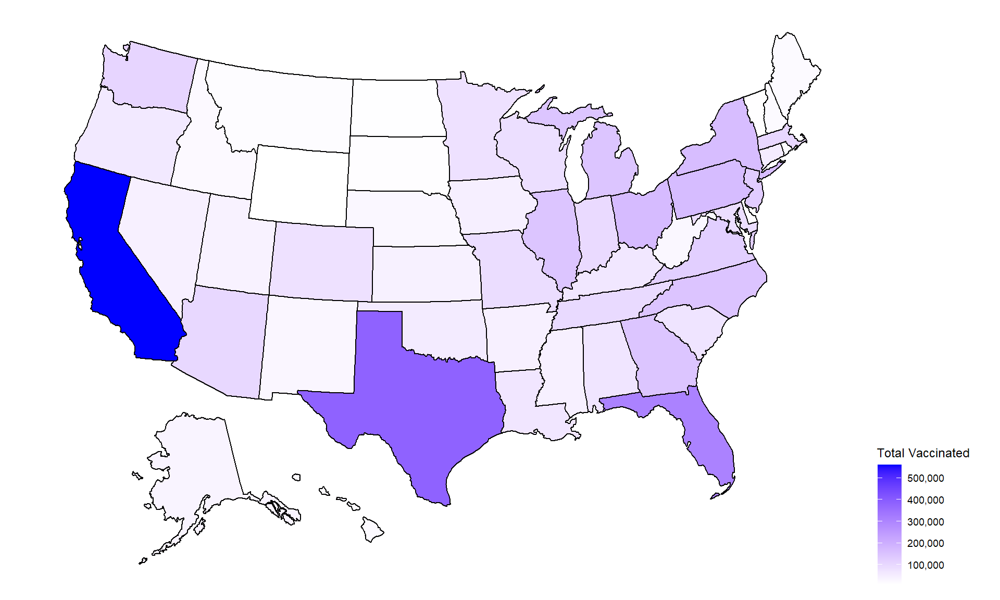
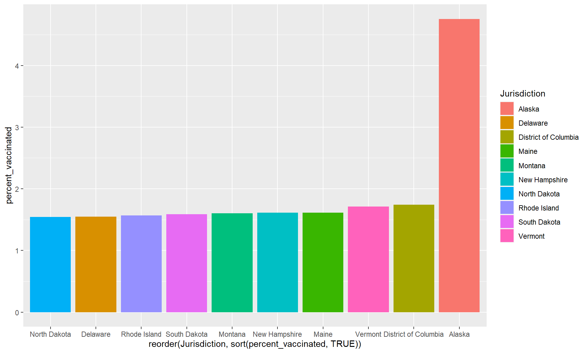
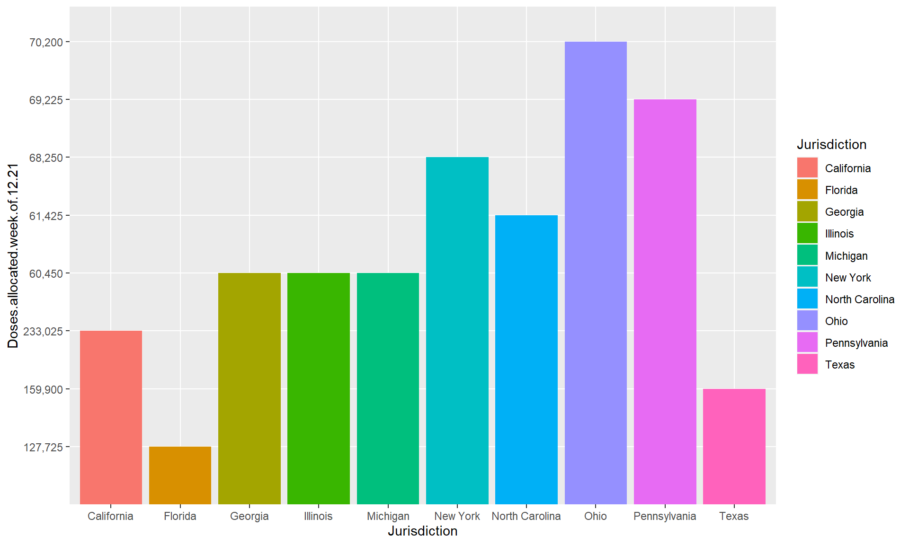
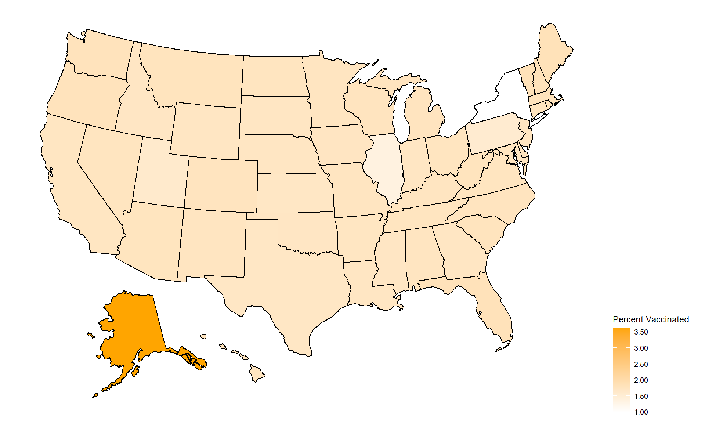 #### Figure 10: Density map of the Total Vaccines (Moderna) Allocated 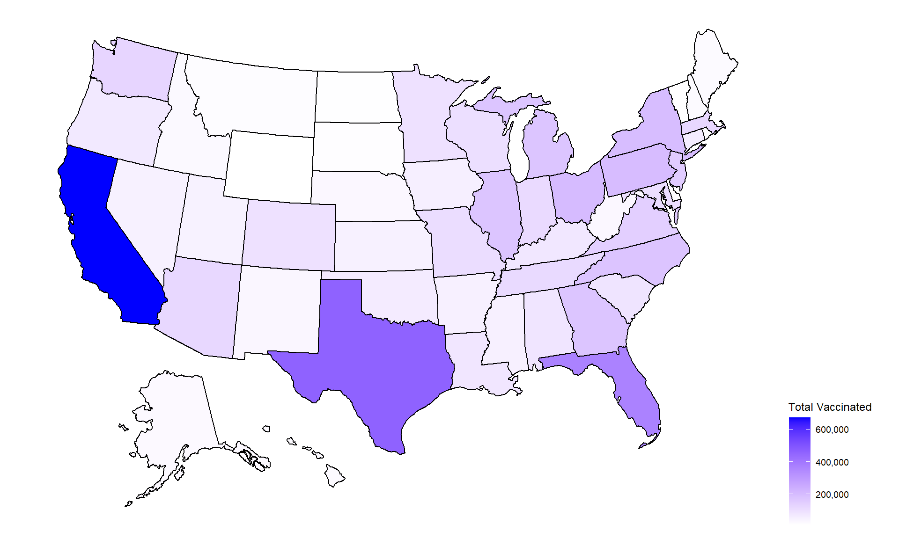
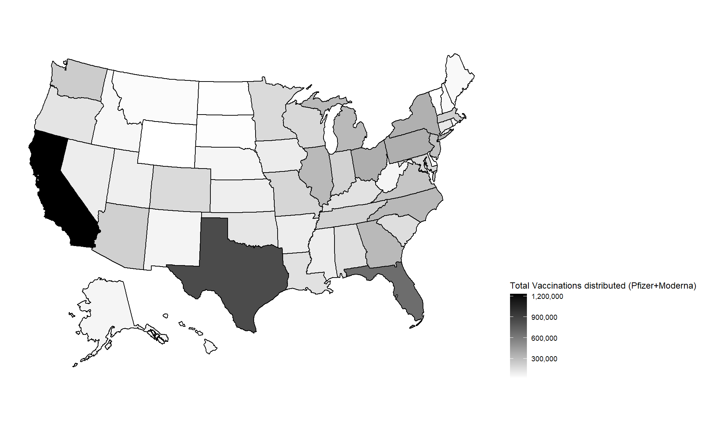
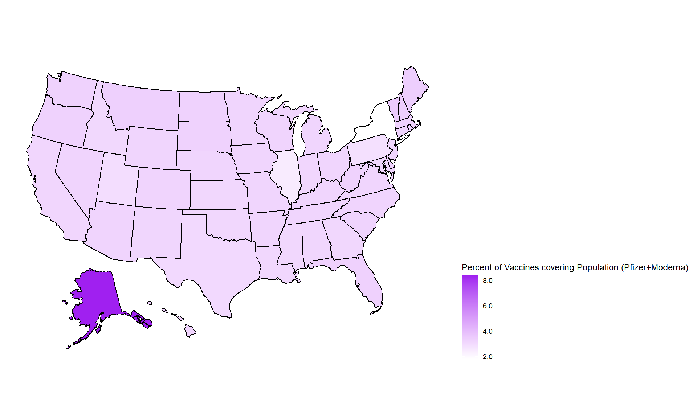
This report is meant to give insight into what states and countries were able to vaccinate the most people during the initail days of availablity for Vaccines, only Pfizer vaccine data was available for this week in the United States. Since the data comes from websites that are being updated (hopefully), next week if I re-run this R report, their should be a new figures and updated data.